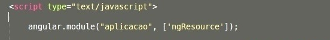

AngularJS é um framework Javascript estruturado para aplicativos web dinâmicos. Ele deixa você usar o HTML como uma linguagem de template e o permite herdar a sintaxe do HTML para expressar seus componentes da aplicação de maneira limpa e clara. Os dados obrigatórios do Angular e a sua injeção de dependências eliminam muito do código que você não deveria ter escrito. E isso tudo acontece dentro do browser, fazendo dele um parceiro ideal com um servidor tecnológico.
Um pouco da história
O nome AngularJS se refere ao termo angle brackets, mais conhecido como tags (sinal de menor que ou maior que) “< >” tão utilizadas no HTML.
Algum tempo depois de ter criado o projeto do AngularJS o Miško Hevery foi trabalhar no Google num projeto chamado Google Feedback onde aplicou pela primeira vez seu framework num projeto do Google. Segundo o próprio criador do Angular o Google Feedback tinha 17 mil linhas de código quando ele assumiu o projeto e conseguiu reescrevê-lo completamente em apenas 3 semanas com pouco mais de 1.500 linhas de código.
Misko Hevery
Principais vantagens do AngularJs
- Fácil de compreender
- REST simples e fácil
- MVVM (Model View View-Model), MVC e Bidirecionalidade com DataBind
- O HTML é seu Template
- Suporte ao IE
- É Open Source!
Quem utiliza?
Várias empresas estão usando o AngularJS como framework principal para desenvolvimento front-end, segundo a Libscore mais de 10.500 sites usam AngularJS hoje em dia.
- Youtube do PS3
- PayPal
- Vevo
- Goodfilms
- E muitas single-pages mundo à fora.
Desta forma, como eu enganaria o browser a fazer o que eu quero?
Módulos
Um módulo em AngularJS é o que define a sua aplicação, comportando-se como um container para diferentes partes dela e de seus controllers. Estes, por sua vez, provém do módulo criado.

Controladores
Em Angular, um Controller é definido por uma função construtora Javascript que é usada para setar um argumento ao escopo.
Quando um Controller é chamado pelo DOM via diretiva "ng-controller", o Angular irá instanciar um novo objeto Controlador, usando as funções construtoras do Controller específico. Um novo escopo filho será criado a disponibilizado como um parâmetro injetável para o construtor do Controller como $scope.

$scope
Este objeto é responsável por referenciar todo o modelo de seu sistema, carregando objetos e sendo utilizado para assistir expressões e propagar eventos. Ele acaba se tornando o principal meio de comunicação entre a view da página e o seu javascript.
Cabeçalho
O cabeçalho básico para iniciar o seu projeto Angular se dá através da declaração de duas diretivas: ng-app e ng-controller; chamando respectivamente o nome dado ao módulo da aplicação e o controlador responsável pelo gerenciamento dos dados e do layout.
Ciclo de vida do AngularJS
Diretivas
O AngularJS deixa você herdar o HTML com adição de novos atributos chamados Diretivas. Estas mesmas, são inicializadas com o prefixo "ng-" e carregam instruções ou alguns elementos HTML nela. Desta forma, podemos reutilizar código em torno da nossso aplicação. Algumas das diretivas mais usadas são:
- ng-model
- ng-repeat
- ng-options
- ng-init
- ng-required
Criando Diretivas
O processso de criação de uma diretiva é bem simples, é necessário somente usar o seu módulo junto do comando "directive" seguida do construtor de sua aplicação. Ela terá que retornar um objeto ou qualquer comando que desejar.
Básico do Angular: Expressões
Uma das grandes vantagens de se utilizar o Angular para construir o seu website dinâmico, é sua facilidade de escrever código por meio de suas expressões e eventos, além é claro, de você poder utilizar filtros para um melhor controle de seus dados. Abaixo, uma simples demonstração de uma maneira possível de manipular dados.

Básico do Angular: eventos
Alguns exemplos de eventos que podem ser chamados no próprio html: ng-click(), ng-submit(), ng-show, ng-hide.
Validação de formulários
A validação de seus formuláios consite, primeiramente, em o Angular assistir o que o usuário está digitando nos campos em tempo real por meio da diretiva "ng-model".
Usando a diretiva "ng-show", você poderá lançar uma mensagem ao usuário somente quando as infomações preenchidas tiverem incorretas, passando como condição as seguintes classes:
- $valid / $invalid
- $pristine
- $dirty
- $touched
- $pattern
Exemplo da validação

Avançando no Angular: filtros
O filtros são utilizados para formatar valores de uma expressão para exibí-la ao usuário ou para assegurar a consistência dos dados a serem enviados ao banco. Sua sintaxe é simples e pode ser declarada na própria expressão que deseja manipulá-la.
Serviços
Serviços são objetos instanciados apenas uma vez pela app, somente quando necessários, que fornecem funções ou mantém o estado de alguma coisa. Quando você cria um service, por padrão, você precisa injetar a dependência dele no seu controller, caso contrário, haverá um erro de compilação.
Vantagens dos services
- "Desinchar" o controller
- Reutilização de código
- Compartilhamento de dados entre os controllers
- Encapsula as requisições ajax com $http
Exemplo Básico
Exemplo com REST

Obrigado a todos!
Fodões
- Alisson Oliveira
- Vinícius Pereira